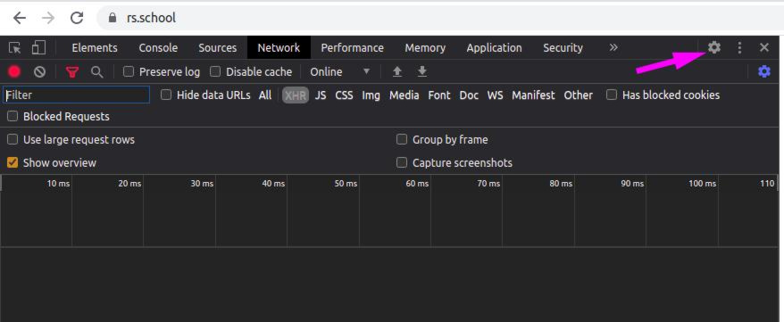

DevTools - инструмент для отладки веб-приложении, которые используют разные API.
| HotKeys | Инструмент |
|---|---|
| F12 | Открывает и закрывает DevTools, по умолчанию открывается первая вкладка Инспектор |
| Shift + Ctrl + C | Активирует инструмент выбора элемента со страницы. Если DevTool закрыт, но откроет его и активирует инструмент выбора элемента со страницы. |
| Shift + Ctrl + I | Открывает последнюю использованную вами вкладку. |
| Клик правой кнопкой мыши -> Посмотреть код | Открывает вкладку "Elemants/Инспектор" |
Окно настроек открывается по F1 или нажатием на иконку треоточия.
Настройки по умолчанию.
Выбор расположения.
Мои обязательные пункты.
Выбор устройств для отладки адаптивности.
Здесь мы смотрим/меняем разметку и стили
Чем я пользуюсь: